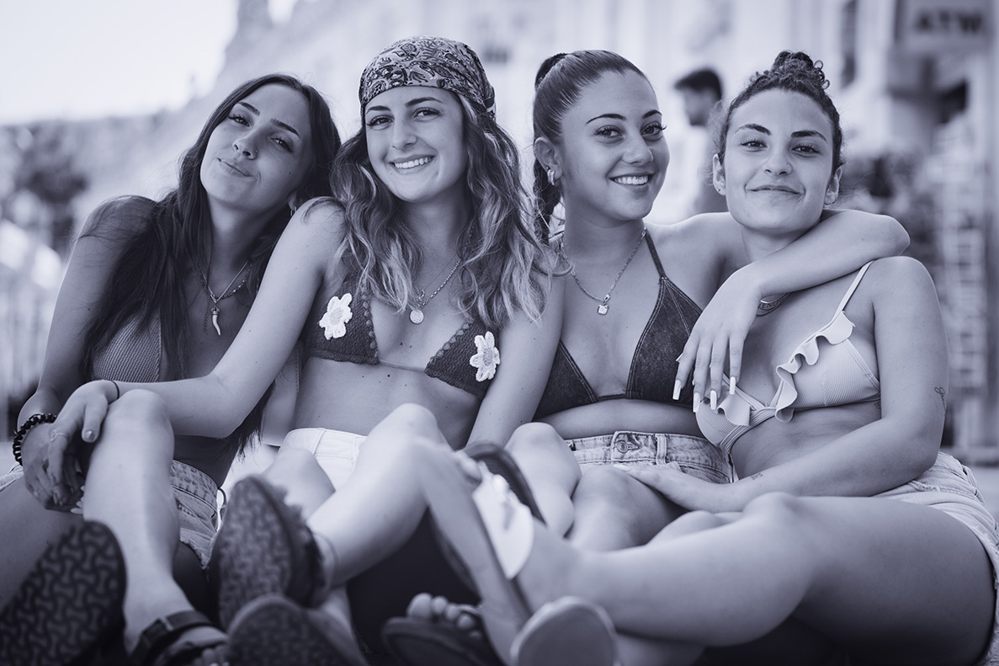

Die Welt mit einem fotografischen Auge sehen.
Es ist mir wichtig, eindrucksvolle Bilder zu schaffen,Es ist mir wichtig, eindrucksvolle Bilder zu schaffen, die Generationen an die Menschen, die uns wichtig sind, und an die schönen Momente in unserem Leben erinnern werden.
Um dies zu erreichen, setze ich auf Kreativität, Engagement und langjährige Erfahrung.


Zeitlose Erinnerungen.
Ich gehe jedes Projekt mit Begeisterung und Freude an der Zusammenarbeit an, da ich meine Arbeit mit großer Liebe mache. Außerdem bin ich eine freundliche und kooperative Person, die Kreativität schätzt und Spaß daran hat, schönes visuelles Material zu schaffen.